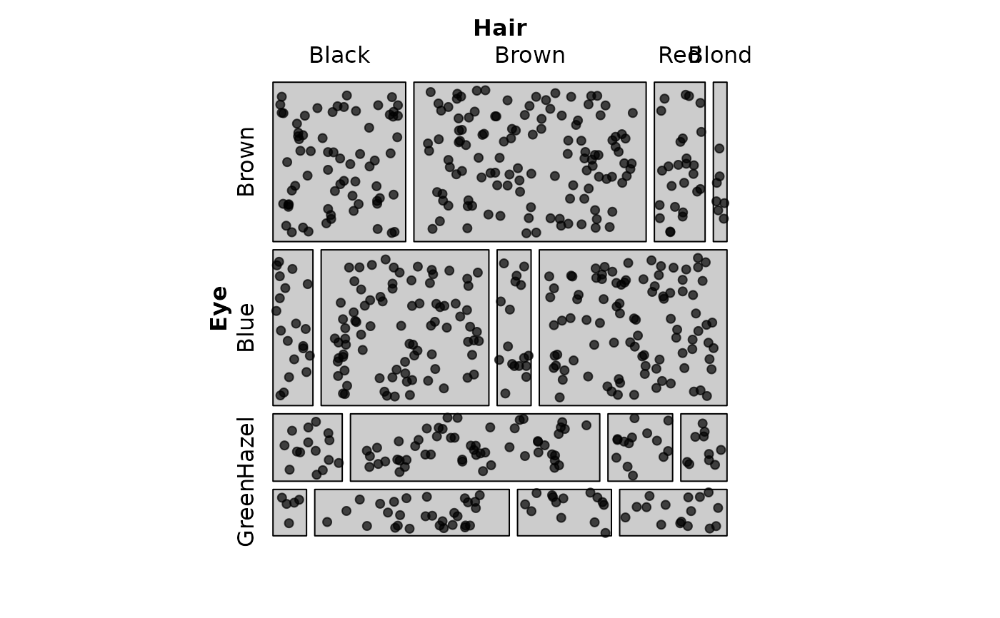
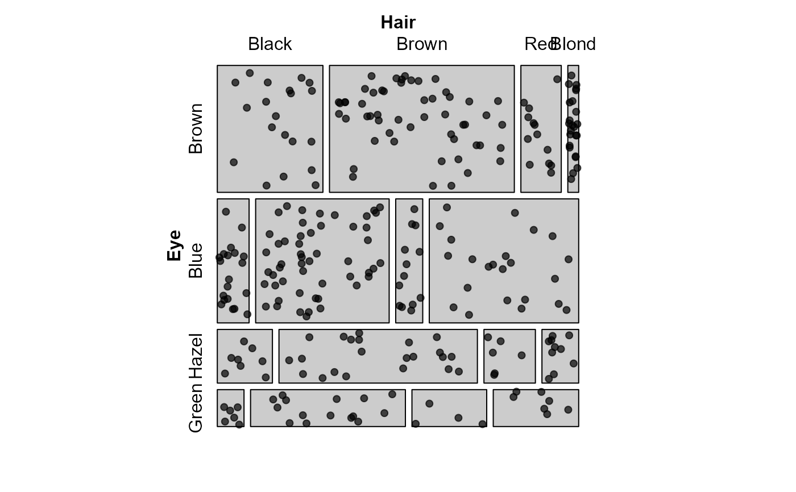
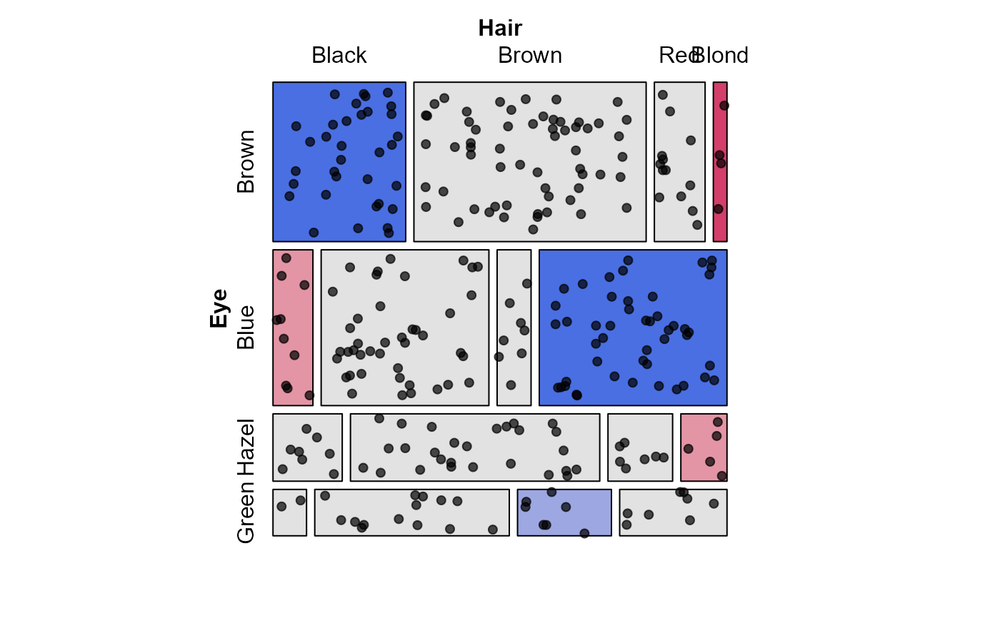

This labeling function for use with strucplot displays,
such as mosaic, draws
random points within each cell of a mosaic plot, where the number of points
represents observed or expected frequencies. This creates a "dot-density"
visualization that provides a direct visual representation of cell frequencies.
Arguments
- labels
Logical vector or scalar indicating whether labels should be drawn for the table dimensions via
labeling_border. Defaults toTRUE.- varnames
Logical vector or scalar indicating whether variable names should be drawn. Defaults to
labels.- value_type
Character string specifying whether to display
"observed"or"expected"frequencies as points.- scale
Numeric scaling factor. The number of points drawn equals
round(frequency / scale). Use larger values for tables with large counts.- pch
Point character (plotting symbol). Default is 19 (filled circle).
- size
Point size as a
unitobject. Default isunit(0.5, "char").- gp_points
A
gparobject controlling point appearance (color, alpha, etc.), for example:gp_points = gpar(col = "red").- margin
Margin inside cells as a
unitobject. Points are drawn within this inset area. Default isunit(0.05, "npc").- seed
Optional integer seed for reproducible point placement across several similar plots. If
NULL(default), no seed is set.- jitter
Numeric jitter amount (0-1) for point placement. Default is 1 (full random). Values < 1 create more regular patterns.
- clip
Logical indicating whether to clip points at cell boundaries. Default is
FALSE.- ...
Additional arguments passed to
labeling_borderfor axis labels.
Value
A function of class "grapcon_generator" suitable for use
as the labeling argument in strucplot and
related functions like mosaic.
Details
This function follows the "grapcon_generator" pattern used by vcd labeling
functions. It returns a function that can be passed to the labeling
argument of strucplot, mosaic, or
related functions as the argument labeling = labeling_poionts(...).
The visualization is inspired by the conceptual model described in Friendly (1995), where cell frequencies are represented as physical counts of objects. Under independence, point density would be uniform across cells (adjusted for marginals), so departures from independence become visible as density variations.
This approach is related to sieve diagrams (sieve),
which also use density to represent association.
References
Friendly, M. (1995). Conceptual and Visual Models for Categorical Data. The American Statistician, 49, 153-160. doi:10.1080/00031305.1995.10476131
Friendly, M. (1997). Conceptual Models for Visualizing Contingency Table Data. In M. Greenacre & J. Blasius (Eds.), Visualization of Categorical Data (pp. 17–35). Academic Press. https://www.datavis.ca/papers/koln/kolnpapr.pdf
Meyer, D., Zeileis, A., and Hornik, K. (2006). The Strucplot Framework: Visualizing Multi-way Contingency Tables with vcd. Journal of Statistical Software, 17(3), 1-48. doi:10.18637/jss.v017.i03
Examples
library(vcd)
# 2-way table of Hair and Eye color
HairEye <- margin.table(HairEyeColor, 2:1)
# Basic usage - observed frequencies as points
mosaic(HairEye,
labeling = labeling_points(scale = 1))

# Show expected frequencies instead of observed
mosaic(HairEye,
labeling = labeling_points(
value_type = "expected",
scale = 2,
seed = 42)
)

# Combine with residual shading
mosaic(HairEye,
shade = TRUE, legend = FALSE,
labeling = labeling_points(scale = 2, seed = 42))

# Make tiles show expected frequencies, show points for observed frequencies
# Reproduces: Fig 6 in Friendly (1995)
mosaic(HairEye,
type = "expected",
shade = TRUE, legend = FALSE,
labeling = labeling_points(scale = 2, seed = 42))